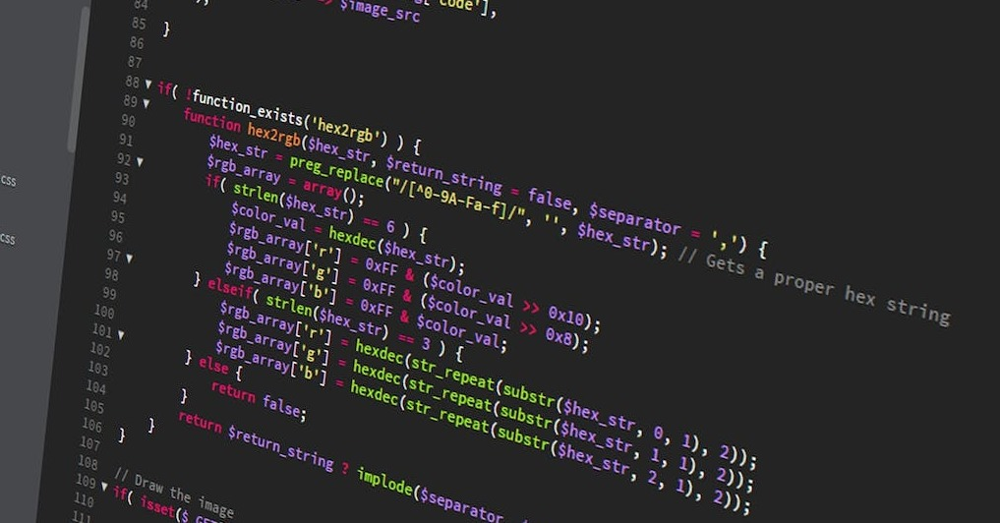

Sobre Nós
História
texto texto texto texto texto texto texto texto texto texto texto texto texto texto texto texto texto texto texto texto texto texto texto texto texto texto texto texto texto texto texto texto texto texto texto texto texto texto texto texto texto texto texto
Sobre Nós

texto texto texto texto texto texto texto texto texto texto texto texto texto texto texto texto texto texto texto texto texto texto texto texto texto texto texto texto texto texto texto texto texto texto texto texto texto texto texto texto texto texto texto
Nome

Do grego, a palavra "Tekhné" significa arte e habilidade técnica, como explorado por Aristóteles. A arte é subjetiva, ou seja, diferente dependendo do ponto de vista, mas sempre bela e signifitiva para quem vê e interpreta; assim como a arte, nossa empresa busca realizar (de forma única) aquilo que é ideal para cada um de nossos clientes, sempre visando estimular sua criatividade e ajudar com sua necessidade tecnológica.
"Fox" é o inglês para "raposa", animal símbolo da inteligência e astúcia, duas características utilizadas pelas fundadoras da empresa na solução de problemas e realização de serviços.
Logo

A logo da nossa empresa é composta por três elementos: uma raposa, o contorno do globo e um símbolo feito com a junção das iniciais das quatro fundadoras e integrantes da Fox Tekhne: Gabriela, Heloisa, Fernanda e Thayane.
A raposa tem um significado importante no processo de construção da Fox Tekhne, por isso foi indispensável na idealização da nossa imagem; o globo representa a visão compartilhada pelas fundadoras e pela própria Fox Tekhne: o alcance em todo o país e, futuramente, mundo, tornando a empresa em uma referência na área tecnológica.
Colaboradoras